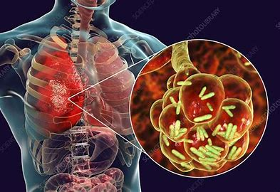
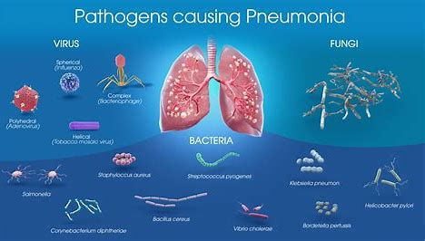
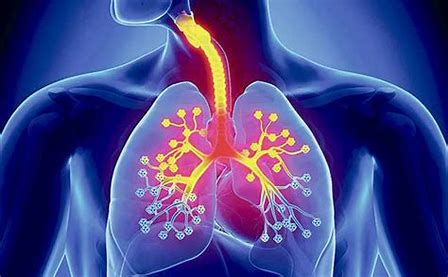

Pneumonia


It is a condition which primarily affects the air sacs of lungs called as alveoli. It is usually caused by infection with viruses or bacteria and less commonly other microorganisms, certain drugs. As per UNICEF study in 2010, there were about 3.97 lakhs under 5 children died of pneumonia in India.
Pneumonia can range in seriousness from mild to life-threatening. It is most serious for infants and young children, people older than age 65, and people with health problems or weakened immune systems.An infection caused by bacteria or virus. Fungi or mycoplasma can rarely be the cause. Fungal pneumonia is not infectious.

Bacteria. Bacteria is the leading cause of pneumonia, with Streptococcus pneumonia being the most common etiologic cause of bacterial pneumonia. Bacterial pneumonia caused by Streptococcus can be the result of an infection of this bacterial species or as a secondary infection that can occur following infection with a different bacterial species.
| Types |
Symptoms |
Treatment |
| Bacterial Pneumonia |
Feeling very tired or very weak |
Medication |
| Viral Pneumonia |
Nausea and vomiting |
Therapy |
| Mycoplasma Pneumonia |
Body pain |
Self-care |
| Other Pneumonia |
Diarrhoea |
Nutrition |